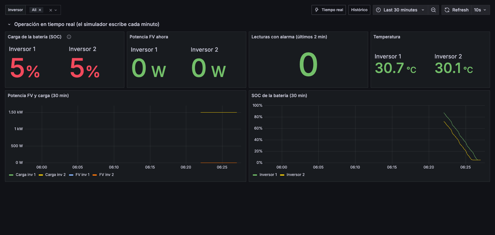
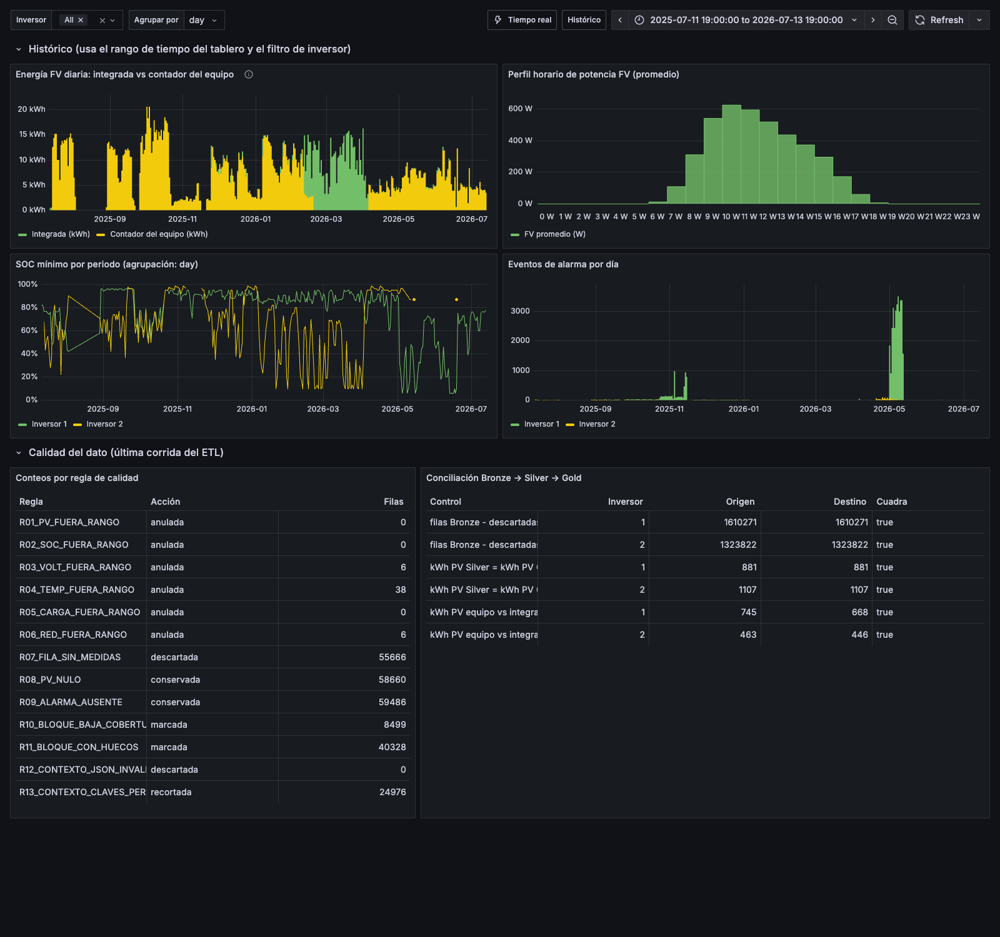
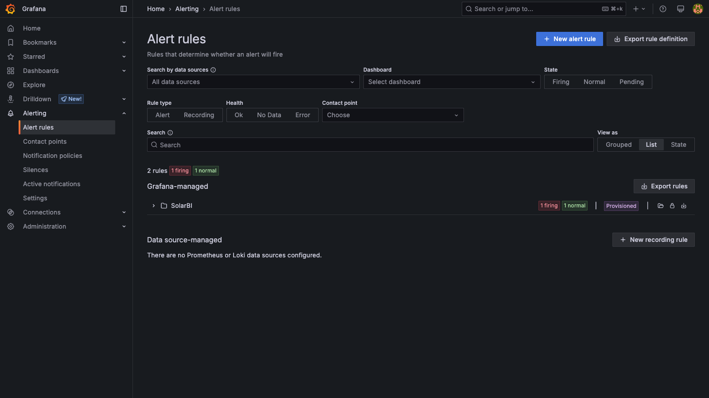

Figura 4. Con el escenario falla: la regla "Alarma activa en un inversor" en estado Firing.
INSTITUCIÓN UNIVERSITARIA PASCUAL BRAVO · INTELIGENCIA DE NEGOCIOS · GRUPOS 50 Y 01 · 2026-II
From inverter telemetry to actionable insights: a containerized, Kubernetes-orchestrated BI pipeline for a hybrid microgrid.
Taller 6. Línea de profundización 7: supervisión operativa en tiempo real con Grafana sobre una bodega de datos.
Integrante: Samuel Alvarez Becerra (trabajo individual, con conocimiento del docente)
Docente: Ramiro Grisales Montoya
Repositorio: https://github.com/00Ssam00/SOLARBI-TALLER6 (por publicar; ver README)
Fecha: 18 de noviembre de 2026
Datos: Bartels, T. S., Wu, R., Lu, X., Chen, Y., Lu, Y., Xia, F., Yang, H., Chen, Y., & Li, T. (2026). OpenCEM: Multimodal photovoltaic and battery microgrid dataset with context records and sky imagery (Version 1.0.0) [Dataset]. Zenodo. https://doi.org/10.5281/zenodo.21436223 (CC BY 4.0).
SolarBI lleva un año de telemetría real de dos inversores híbridos (15,6 millones de filas en SQLite) a un modelo dimensional en PostgreSQL por capas Bronze, Silver y Gold, con un ETL idempotente que mide y reporta la calidad del dato. Sobre ese modelo corren un tablero operativo en Grafana con alertas y un tablero analítico en Power BI. Todo el servidor corre en contenedores sobre Kubernetes y se levanta desde cero con make up en unos 55 segundos.
Hallazgos para la dirección de infraestructura:
Recomendaciones: (1) revisar el campo fotovoltaico y la entrada PV del inversor 2; (2) investigar la causa de las alarmas de mayo en el inversor 1 y obtener del fabricante del inversor el significado de los bits; (3) antes de comprar más paneles, resolver la disponibilidad del registro, porque sin datos continuos no se puede dimensionar con confianza; (4) evaluar gestión de cargas hacia las horas de 9 a 13 h, donde está el pico solar.
| Usuario | Necesidad | Preguntas que responde la solución | Herramienta |
|---|---|---|---|
| Dirección de infraestructura | Decidir inversiones (más paneles, más batería, gestión de cargas) | ¿Cuánta energía aporta el sol y cuánta se compra a la red? ¿Cuánto cuesta importar? ¿Qué inversor rinde menos? ¿La batería alcanza? ¿Qué franjas concentran el consumo? | Power BI |
| Mantenimiento del sitio | Ver el estado casi en tiempo real y recibir alertas | ¿Cuál es el SOC ahora? ¿Algún inversor reporta alarma? ¿Temperatura normal? ¿Llegan datos? | Grafana |
| Área de TI | Que el servicio corra en la plataforma de contenedores | ¿Se levanta y se destruye con un comando? ¿Sobrevive al reinicio de un pod? ¿Dónde están las credenciales? | Kubernetes |
Descarga verificada con SHA-256 (la salida completa está en el Anexo 1). La base se descomprimió con Zstandard v1.5.7 (zstd -d opencem-v1.0.0.sqlite.zst -o data/opencem-v1.0.0.sqlite) y no se modifica: es la capa Bronze, se abre siempre en modo solo lectura y nunca se sube a GitHub.
{{EVID_INVENTARIO}}
| Hallazgo | Evidencia | Consecuencia |
|---|---|---|
| Dos inversores con cobertura distinta | El inversor 1 llega hasta el 13 jul 2026; el 2, hasta el 22 jun 2026 | Todo comparativo entre inversores se limita al periodo común |
| Cadencia irregular | Mediana de 12,6 s; huecos de hasta 2,6 días | La energía se integra con dt limitado a 60 s; los huecos no se rellenan |
| Nulos sin imputar | pv1power nulo: 1.233 filas (inv. 1) y 57.427 (inv. 2) | Se dejan nulos; se miden en la regla R08 |
Tabla totals inutilizable | Todas sus potencias son 0 en los días revisados | No se usa; los totales se construyen desde analog_measurements |
| Bits de alarma sin documentar | El diccionario dice "definidos por el componente" | La severidad se asume 'aviso' y se declara como limitación |
| Tiempos en UTC con decimales | Sitio en Shenzhen (Asia/Shanghai, UTC+8) | Los días y horas del modelo son locales; los bloques se guardan en UTC |
| Contexto con información sensible | Comandos, rutas y descripciones de lo que hace cada persona | Carga minimizada con lista blanca (sección J) |
| Indicador | Fórmula | Unidad | Granularidad | Meta o umbral | Fuente | Usuario |
|---|---|---|---|---|---|---|
| Energía solar generada | Σ pv1power · Δt | kWh | 5 min, día, mes | Dentro de ±25 % del contador del equipo | analog_measurements | Dirección |
| Energía entregada a la carga | Σ outsumw · Δt | kWh | 5 min, día, mes | Referencia: usedenergytoday | analog_measurements | Dirección |
| Energía importada de la red | Σ linepowerw_a · Δt | kWh | 5 min, día, mes | Tendencia a la baja | analog_measurements | Dirección |
| Disponibilidad del registro | segundos con lectura (huecos ≤ 60 s) / segundos del periodo | % | día, mes | ≥ 95 % | derivado | Dirección, TI |
| Porcentaje de datos válidos | filas utilizables / filas del Bronze | % | inversor | ≥ 95 % | etl.v_pct_validos | TI |
| Autosuficiencia solar (propio) | 1 − energía de red / energía a la carga | % | día, mes | Subir; hoy ≈ 20 a 24 % | gold.v_kpi_mensual | Dirección |
| SOC mínimo y tiempo con batería baja (propio) | MIN(soc_min) y % de bloques con soc_min < 30 | % | día, mes | < 30 % dispara alerta | fact_lectura_5min | Mantenimiento |
| Costo de importar de la red (económico) | energía de red × tarifa | COP | mes | Bajar | v_kpi_mensual + parametro | Dirección |
| Valor de la energía solar | energía solar × tarifa | COP | mes | Subir | v_kpi_mensual + parametro | Dirección |
Por qué los dos indicadores propios. La autosuficiencia mide qué parte de la carga cubre el sol, que es la pregunta de inversión central de un sistema híbrido: un indicador de planta solar pura no la contesta porque ignora la red y la batería. El SOC mínimo y el tiempo con batería baja miden el riesgo de quedarse sin respaldo: la batería es lo que distingue al sistema híbrido de uno conectado solo a red.
Tarifa elegida. 790,49 COP/kWh: lo que EPM facturaba por kWh de estrato 3 en Medellín al cierre de 2025, según El Colombiano. Es una tarifa residencial usada como referencia pública y verificable, no la tarifa del contrato del campus; por eso vive en la tabla gold.parametro y en el parámetro what-if de Power BI. Con ese valor, en los días con cobertura de al menos 90 % la importación costó unos 965 mil COP (inversor 1, 1.221 kWh) y 1,61 millones de COP (inversor 2, 2.040 kWh).
El indicador que no se puede calcular es el Performance Ratio (PR) (y su pariente, el rendimiento específico en kWh/kWp). Necesita dos insumos que la fuente no trae: la irradiancia en el plano de los paneles y la potencia pico instalada del arreglo. Sin ellos no se puede separar "hubo poco sol" de "los paneles rinden poco". Qué haría: (1) pedir al sitio los kWp instalados; (2) estimar la irradiancia esperada con un modelo de cielo claro a partir de la latitud y longitud, que el propio registro de contexto derivado trae, y comparar la curva real contra la de cielo claro en días despejados; (3) a mediano plazo, usar las imágenes de cielo de OpenCEM, fuera del alcance de este taller, o instalar un piranómetro.
Esquema: constelación de hechos con esquema en estrella (star), no copo de nieve. Las dimensiones son pequeñas (la mayor, dim_fecha, tiene unas 400 filas), así que desnormalizar no cuesta almacenamiento y evita joins en cada consulta de Power BI y Grafana. Las cuatro tablas de hechos comparten dimensiones conformadas (dim_fecha, dim_hora, dim_inversor).
| Proceso | Tabla de hechos | Grano | Medidas |
|---|---|---|---|
| P1 Operación | fact_lectura_5min | Un inversor en un bloque de 5 minutos (UTC) | Potencias promedio y máxima, SOC, tensión, corriente, temperatura, energía del bloque, cobertura |
| P2 Balance energético | fact_energia_dia | Un inversor en un día local | kWh integrados, kWh del contador del equipo, diferencia, cobertura del día |
| P3 Eventos de alarma | fact_evento_alarma | Un episodio: racha de lecturas con la misma firma de alarma | Duración, número de lecturas |
| P4 Contexto operativo | fact_contexto | Una anotación del registro de contexto | Duración, núcleos de CPU, esfuerzo estimado |
| Dimensión | Atributos principales | Jerarquía | Origen |
|---|---|---|---|
| dim_fecha | fecha, año, trimestre, mes, nombre del mes, día, día de la semana, semana ISO, fin de semana, estación | año > trimestre > mes > día | Calendario generado |
| dim_hora | hora, franja, hora solar | franja > hora | Calendario generado |
| dim_inversor | nombre, primera y última lectura, activo al cierre | — | Fuente |
| dim_estado_operativo (propia) | startupstatus, outstatus, chgstatus, categoría, descripción | categoría > estado | Construida por combinación de tres códigos |
| dim_alarma (propia) | firma JSON, palabra, valor, bits activos, severidad | severidad > firma | Construida desde sysalarmflag |
| dim_tipo_contexto (propia) | fuente, tipo de contexto, categoría | categoría > fuente > tipo | Construida desde el JSON |
La dimensión propia principal es dim_estado_operativo: en la fuente existen tres columnas enteras sueltas, y la dimensión las convierte en un estado con categoría que se puede filtrar y contar. Reconozco que las etiquetas (salida 0, 1 o 2; carga) son un supuesto, porque OpenCEM no documenta los códigos.
Las alarmas se modelan como una tabla de hechos propia (episodios) y no como una columna de las lecturas. Razones: (1) el grano es distinto, un episodio dura desde segundos hasta horas y se cuenta, no se promedia; (2) un promedio de 5 minutos esconde un episodio corto; (3) el episodio permite medir duración y frecuencia. Para no perder la relación con las lecturas, fact_lectura_5min conserva alarma_id y n_alarmas, de modo que se puede cruzar un episodio con las lecturas de su ventana.
| Proceso \ Dimensión | dim_fecha | dim_hora | dim_inversor | dim_estado_operativo | dim_alarma | dim_tipo_contexto |
|---|---|---|---|---|---|---|
| P1 fact_lectura_5min | ✔ | ✔ | ✔ | ✔ | ✔ | |
| P2 fact_energia_dia | ✔ | ✔ | ||||
| P3 fact_evento_alarma | ✔ | ✔ | ✔ | ✔ | ||
| P4 fact_contexto | ✔ | ✔ | ✔ (opcional) | ✔ |
Candidata: dim_inversor. La tabla specs trae versiones de hardware, de BMS y de firmware que pueden cambiar a lo largo del año. Aplicaría SCD tipo 2 (fila nueva con vigencia desde y hasta): un cambio de firmware afecta cómo se interpretan las lecturas de ese periodo, y se necesita saber con qué versión se tomó cada una. No se aplica en esta entrega porque los atributos cargados hoy (nombre, primera y última lectura) no cambian de forma que lo justifique; queda como decisión de diseño documentada.
El diccionario completo (16 tablas, 144 columnas, con tipo, llaves, origen y regla) se genera desde la base en ejecución con scripts/gen_diccionario.py, para que no se desincronice. Se incluye en el Anexo 2.
| Variable | Unidad | Evidencia |
|---|---|---|
| pv1power | W | Diccionario del registro; al integrarla da 2,10 kWh el 30 nov 2025 (inversor 1) contra 2,1 kWh del contador pvgeneratenergytoday |
| outsumw (carga) | W | El diccionario la marca "component-defined". Se deduce W así: promedio de 310 W × 24 h = 7,4 kWh, igual al contador usedenergytoday = 7,4 kWh (inversor 1, 30 nov 2025) |
| linepowerw_a (red) | W | Diccionario; coherente con el balance: carga ≈ red + aporte de la batería y del sol |
| battsoc | % | Rango observado 35 a 100 |
| battvolt | V | Rango observado 52,2 a 57,5, típico de un banco de 48 V nominales |
| battcurr | A (positivo = descarga) | Documentación del registro |
| temper1 | °C | Rango observado 13 a 45 |
| energías de statistics | kWh | Diccionario del registro; se reinician a medianoche local |
Herramienta: Python 3.12 con sqlite3 y psycopg 3, en un contenedor. Justificación: el origen es SQLite y el destino es PostgreSQL, así que el ETL necesita leer uno y cargar el otro con COPY; las agregaciones pesadas (ventanas, promedios por bloque) se empujan al motor de SQLite, y la lógica con estado (episodios de alarma, minimización del JSON) es más clara en Python que en SQL. No hay herramienta gráfica que reproducir: el ETL es un solo script versionado y corren con un Job.
Cada regla cuenta cuántas filas afecta, por inversor, en la tabla etl.regla_calidad. Resultado de la corrida de año completo (inversor 1 / inversor 2):
| Regla | Qué hace | Acción | Inv. 1 | Inv. 2 |
|---|---|---|---|---|
| R01 PV fuera de 0 a 8000 W | valor físicamente imposible | se anula | 0 | 0 |
| R02 SOC fuera de 0 a 100 % | imposible | se anula | 0 | 0 |
| R03 tensión de batería fuera de 30 a 80 V | imposible para un banco de 48 V | se anula | 1 | 5 |
| R04 temperatura fuera de −20 a 120 °C | sensor fuera de rango | se anula | 13 | 25 |
| R05 carga fuera de 0 a 20.000 W | imposible | se anula | 0 | 0 |
| R06 red fuera de −50 a 20.000 W | imposible | se anula | 6 | 0 |
| R07 fila sin medidas | pv, carga y SOC nulos o anulados a la vez | se descarta | 5 | 55.661 |
| R08 pv1power nulo | ausencia de dato | se conserva nulo | 1.233 | 57.427 |
| R09 alarma ausente | no se asume "sin alarma" | se conserva | 1.854 | 57.632 |
| R10 bloque con menos de 25 % de cobertura | poco respaldo | se marca | 4.422 | 4.077 |
| R11 bloque con menos de 90 % de cobertura | huecos | se marca | 20.391 | 19.937 |
| R12 contexto con JSON inválido | — | se descarta | 0 | |
| R13 contexto con claves fuera de la lista blanca | minimización (Ley 1581) | se recorta | 24.976 | |
Inválido frente a evento real. Un valor es inválido si es físicamente imposible (SOC de 130 %, tensión de 5 V): se anula y se cuenta. Un valor extremo pero posible es un evento y se conserva: una batería en 8 %, una alarma activa o un apagado no se corrigen, se modelan. Los nulos no se imputan: un hueco es ausencia de dato, no un cero, y se refleja en la cobertura.
| Se gana | Se pierde |
|---|---|
| De 2,99 millones de lecturas a 166.753 bloques: 94 % menos filas, consultas rápidas en Power BI y Grafana. Cada bloque agrupa unas 24 lecturas (cadencia de 12,6 s), así que el promedio suaviza el ruido sin esconder la forma del día. Permite unir lecturas, estado y alarmas en una misma clave temporal. | Picos de menos de 5 minutos: se compensa guardando también el máximo (pv_w_max).Episodios cortos de alarma: se compensa construyéndolos desde el Bronze, no desde el bloque. Resolución para transitorios del inversor, que este taller no analiza. |
La energía no se calcula del promedio del bloque sino integrando cada lectura (Σ potencia × Δt, con Δt limitado a 60 s) para que un hueco no se interprete como potencia constante.
| Control | Origen | Destino | Cuadra |
|---|---|---|---|
| Filas Bronze − descartadas = filas en Silver (inv. 1) | 1.610.271 | 1.610.271 | sí |
| Ídem (inv. 2) | 1.323.822 | 1.323.822 | sí |
| kWh PV Silver = Gold (inv. 1) | 880,967 | 880,971 | sí |
| kWh PV Silver = Gold (inv. 2) | 1.107,426 | 1.107,428 | sí |
| kWh PV del contador del equipo contra integrado, días con cobertura ≥ 90 % (inv. 1) | 744,6 | 668,2 | sí (−10,3 %, tolerancia 25 %) |
| Ídem (inv. 2) | 463,1 | 445,8 | sí (−3,7 %) |
| Anotaciones de contexto válidas = filas en Gold | 24.976 | 24.976 | sí |
Diferencia explicada: los autores del registro reportan un error de unos 20 % entre la energía fotovoltaica que integran y la del contador; el resultado propio (−10,3 % y −3,7 %) es coherente. El contador cuenta todo el día y la integración solo ve donde hay lecturas, por eso la comparación se hace en días con al menos 90 % de cobertura.
Idempotencia: cada tabla se escribe con INSERT ... ON CONFLICT DO UPDATE sobre su clave natural. Se ejecutó el ETL dos veces sobre la misma ventana y se obtuvieron los mismos conteos (166.753 bloques, 603 días, 39.980 episodios, 24.976 anotaciones); el Job también se repitió dentro del clúster con el mismo resultado.
DDL en sql/01_esquemas.sql a sql/05_vistas.sql, administrable desde DBeaver (conexión a localhost:5433, base solarbi).
| Decisión | Justificación |
|---|---|
| PK compuesta (inversor_id, bloque_ts) en fact_lectura_5min | Es el grano; el índice de la PK sirve las consultas por inversor y rango de tiempo y hace posible el upsert idempotente |
| Índices secundarios en fecha_id y bloque_ts | Las consultas analíticas filtran por rango de fechas sin filtrar por inversor |
Índice GIN con jsonb_path_ops en silver.contexto.valor | Acelera el operador de contención @> sobre el JSON |
| FK de hechos a dimensiones | Integridad referencial en la carga; con 166 mil filas el costo es bajo |
| Roles de mínimo privilegio | lector_bi solo SELECT; simulador_rw solo escribe rt.lectura |
Operadores usados: ->>, #>>, @>, ?, jsonb_path_exists y jsonb_array_elements_text con ordinalidad. Por ejemplo, la carga AC media que el propio pipeline de contexto derivó, por inversor:
SELECT (valor->>'inverter')::int AS inversor, COUNT(*) AS ventanas,
ROUND(AVG((valor #>> '{metrics,ac_load_w_mean}')::numeric), 1) AS carga_ac_media_w
FROM silver.contexto
WHERE valor @> '{"source":"derived_context_pipeline"}' AND valor #> '{metrics}' IS NOT NULL
GROUP BY 1 ORDER BY 1;
-- inversor 1: 289,2 W (1.159 ventanas) inversor 2: 920,2 W (1.065 ventanas)
N1: energía mensual con variación contra el mes anterior (LAG) y acumulado (SUM OVER). N2: autosuficiencia diaria con media móvil de 7 días (AVG OVER ROWS) y ranking mensual (RANK). N3: percentil 90 de potencia FV por hora (percentile_cont). N4: potencia de carga con y sin cómputo activo (join por rango de tiempo). N5: duración mediana de alarmas por mes con comparativo contra el mes anterior.
Diseño completo, medidas DAX y pasos en docs/powerbi_guia.md. Formato versionable elegido: PBIP (Power BI Project, carpeta con TMDL y JSON de informe en texto plano). Un .pbix es un binario comprimido, no se puede comparar ni fusionar en Git; PBIP sí.
localhost:5433, base solarbi, usuario lector_bi, modo Importar, desde las tablas gold.* (no desde los archivos de origen).dim_fecha marcada como tabla de fechas; relaciones uno a muchos hacia los cuatro hechos.grafana/provisioning/datasources) con el rol de solo lectura lector_bi y la clave tomada de la variable de entorno que inyecta el Secret.inversor (consulta a dim_inversor, multivalor) y agrupacion (hora o día).
Figura 1. Tablero de tiempo real con el escenario bateria_baja: el SOC cae a 5 % y se pone en rojo.

Figura 2. Tablero histórico: energía diaria, perfil horario, SOC mínimo, eventos de alarma (picos de noviembre de 2025 y mayo de 2026), reglas de calidad y conciliación.
| Regla | Condición | Duración | Umbral y justificación |
|---|---|---|---|
| Batería baja | Último SOC de cada inversor en una ventana de 5 min < 30 % | 1 min | 30 %: solo 2,0 % y 5,7 % de los bloques históricos quedaron por debajo, así que el umbral deja margen antes del corte y casi no genera falsos positivos |
| Alarma activa en un inversor | Alguna lectura con alarma en los últimos 2 min | 1 min | Cualquier alarma: no se conoce la severidad de los bits, así que se prefiere avisar; la regla se puede afinar cuando se documenten |
Ambas viven en el ConfigMap grafana-alertas: cambiar un umbral es editar el YAML y reiniciar Grafana, sin reconstruir ninguna imagen.

Figura 3. Estado de las reglas con el escenario bateria_baja (la regla "Batería baja" en estado Firing).
Figura 4. Con el escenario falla: la regla "Alarma activa en un inversor" en estado Firing.
El simulador es un CronJob dentro del clúster, una ejecución por minuto. Cada una inserta seis lecturas por inversor (una cada 12 s) en rt.lectura, siguiendo el perfil horario real (promedio histórico por hora local) con ruido. El escenario se cambia en vivo con make escenario-falla, make escenario-bateria o make escenario-normal, que modifican el ConfigMap sin reconstruir la imagen. Con el escenario bateria_baja el SOC cae 3 puntos por lectura y la alerta se dispara en unos cuatro minutos.
| Grafana | Power BI | |
|---|---|---|
| Pregunta | ¿Qué está pasando ahora y debo actuar? | ¿Qué pasó, por qué y qué conviene hacer? |
| Usuario | Mantenimiento y operación | Dirección de infraestructura |
| Frecuencia | Refresco de 10 s; alertas cada 30 s | Actualización programada o manual (diaria o semanal) |
| Datos | Ventana corta, tabla rt y vistas del histórico | Modelo completo importado, años de historia |
| Fortaleza | Series de tiempo, umbrales, alertas | Modelo semántico, DAX, escenarios, narrativa |
Por qué no se intercambian. Grafana no tiene un modelo semántico con medidas de negocio ni what-if; un tablero de decisión en Grafana obligaría a escribir SQL para cada indicador. Power BI no está pensado para alertar en segundos ni para refrescar cada 10 s sobre datos que cambian continuamente; y un tablero operativo que se actualiza una vez al día no sirve a quien debe reaccionar.
Un gateway Modbus/RS485 (o el SCADA) publicaría cada lectura a un bus de mensajes (MQTT o Kafka). Un consumidor escribiría directo en una tabla de series de tiempo (hypertable de TimescaleDB) y las agregaciones a 5 minutos pasarían a ser agregados continuos, en lugar del ETL por lotes. El simulador de este taller ya cumple ese papel: escribe en rt.lectura con el mismo esquema. Habría que añadir: autenticación del gateway, reintentos con cola, validación de rangos en la entrada (las reglas R01 a R06 pasarían al consumidor) y retención por capas (datos crudos 30 días, agregados por años).
La tabla context contiene anotaciones de las estaciones de trabajo (comandos de consola, rutas, nombres de proyecto, descripciones libres de lo que se ejecutó). Aunque el registro viene parcialmente redactado, esa información describe la actividad de personas y podría ser dato personal de sus titulares (estudiantes y personal). Se aplicaron los principios de la ley:
| Principio | Cómo se aplica |
|---|---|
| Finalidad | El contexto se usa solo para explicar el consumo energético, no para vigilar personas |
| Necesidad y minimización | El ETL carga solo una lista blanca de claves (fuente, tipo, núcleos de CPU, esfuerzo, métricas). Se descartan comandos, rutas y texto libre en las 24.976 anotaciones (regla R13) |
| Seguridad | Acceso solo con el rol de lectura; el Bronze con el original queda fuera del repositorio |
| Circulación restringida | No se publican anotaciones individuales: los tableros muestran conteos y agregados |
| Datos sensibles | No se tratan; en un despliegue real se exigiría aviso de privacidad y autorización de los titulares |
scripts/up.sh genera claves aleatorias en .env (permisos 600, ignorado por git) y las entrega al clúster como un Secret (solarbi-credenciales). El repositorio solo versiona .env.ejemplo. Los contenedores leen las claves con secretKeyRef; ninguna está en una imagen ni en un manifiesto.lector_bi (solo SELECT, para Grafana y Power BI) y simulador_rw (solo escribe rt.lectura).localhost:5433 solo para Power BI y DBeaver.| Imagen | Base | Tamaño | Justificación |
|---|---|---|---|
| solarbi-etl:1 | python:3.12-slim | 235 MB | slim evita el sistema completo de la imagen estándar (más de 1 GB) y, a diferencia de Alpine, usa glibc: psycopg[binary] trae ruedas precompiladas y no se compila nada. Corre como usuario no root (10001) |
| solarbi-simulador:1 | python:3.12-slim | 235 MB | Misma base: se reutiliza la capa en disco |
| postgres:17-alpine | oficial | 416 MB | Versión fija |
| grafana/grafana:11.6.0 | oficial | 826 MB | Versión fija, nada de latest |
docker-compose.yml reproduce PostgreSQL, ETL, simulador y Grafana en desarrollo local, con las mismas imágenes y el mismo provisioning que usa el clúster (Grafana en el puerto 3002, PostgreSQL en el 5434).
Distribución elegida: el Kubernetes integrado de OrbStack (un nodo, v1.36). Ya uso OrbStack como motor Docker en un Mac con Apple Silicon, así que no hay otra máquina virtual que mantener (minikube y kind suman una más). Comparte el motor de imágenes con el clúster: mis imágenes llegan al clúster sin registro, con docker build y imagePullPolicy: Never. Los servicios LoadBalancer se publican en localhost, que es lo que necesitan Power BI y DBeaver. Además monta las carpetas del Mac, por eso el Job lee el SQLite con hostPath y solo lectura. Limitación: es específico de macOS; en otra máquina se usaría kind load docker-image y un volumen equivalente.
| Necesidad | Objeto elegido | Por qué frente a las alternativas |
|---|---|---|
| Aislar el proyecto | Namespace solarbi | Un solo kubectl delete namespace lo borra todo; permite cuotas |
| Base que no pierde datos | StatefulSet postgres + volumeClaimTemplate (PVC 5 Gi) + Service headless | Un Deployment no garantiza identidad estable ni el reenganche del mismo volumen; el StatefulSet sí |
| Grafana siempre disponible | Deployment grafana con provisioning por ConfigMap | No tiene estado propio (todo está en el provisioning), así que un Deployment lo repone sin intervención |
| Credenciales fuera del código | Secret solarbi-credenciales | No van en imagen ni en git; un ConfigMap no sirve porque no está pensado para secretos |
| Configuración separada | ConfigMap solarbi-config (+ 4 ConfigMaps de Grafana vía kustomize) | Ventana del ETL, ruta del origen y escenario del simulador cambian sin reconstruir la imagen |
| Comunicación entre servicios | Service (DNS postgres) | El ETL, el simulador y Grafana encuentran la base por nombre, no por IP del pod, que cambia |
| Carga histórica | Job etl | Corre una vez y termina; deja el resultado en etl.corrida y en los logs. Un Deployment lo reiniciaría sin fin |
| Datos nuevos periódicos | CronJob simulador (* * * * *) | Tiempo fijo, concurrencyPolicy: Forbid; un Deployment en bucle gastaría memoria constante |
| Saber si está sano | readinessProbe y livenessProbe: pg_isready (PostgreSQL) y HTTP /api/health (Grafana) | Readiness retira del servicio a un pod no listo; liveness lo reinicia si se cuelga |
| No agotar el anfitrión | requests y limits de CPU y memoria en cada contenedor | PostgreSQL 250m/512Mi a 1/1Gi; Grafana 100m/256Mi a 500m/512Mi; ETL hasta 2 CPU y 1Gi |
| Acceso desde el anfitrión | Service tipo LoadBalancer: Grafana en localhost:3001, PostgreSQL en localhost:5433 | OrbStack los publica; NodePort exigiría recordar puertos altos y port-forward ocupa una terminal |
Un comando levanta todo y otro lo elimina: make up (construye las imágenes, crea el Secret, aplica los manifiestos con kustomize, espera a PostgreSQL, al ETL y a Grafana) y make down (borra el namespace, incluido el volumen). Se probó la secuencia down y up completa desde cero, con ETL sobre los 4,4 GB: unos 55 segundos.
{{EVID_RESILIENCIA}}
Se elimina el pod de PostgreSQL: el StatefulSet lo recrea y se reengancha al mismo volumen, con los mismos datos. Se elimina el pod de Grafana: el Deployment lo recrea con su fuente de datos, tableros y alertas, sin pasos manuales.
kubectl get y kubectl describe{{EVID_GET}}
{{EVID_DESCRIBE}}
kustomization.yaml) para generar los ConfigMaps de Grafana desde los archivos del repositorio.kubectl scale funciona con más réplicas detrás del Service; PostgreSQL tiene estado y un solo escritor, así que otra réplica no comparte el volumen ni replica los datos: exigiría replicación en streaming y un operador.{{EVID_CHECKSUM}}
startupstatus, outstatus, chgstatus) no está documentado: las etiquetas de dim_estado_operativo y la severidad de dim_alarma son supuestos declarados.linepowerw_a se interpreta como potencia tomada de la red y gridpowerw_a como salida hacia la red; es consistente con los datos pero no está confirmado por el fabricante.